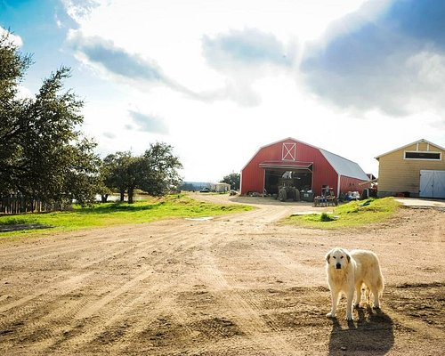
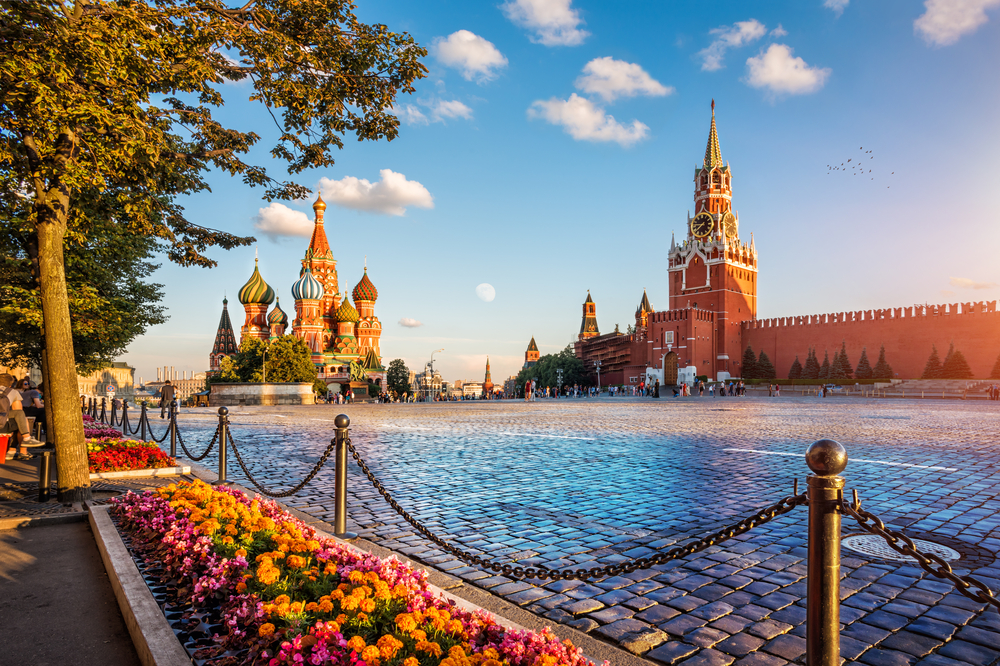
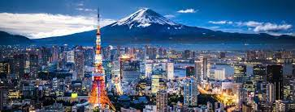

O Texas, o segundo maior estado dos EUA, possui uma economia diversificada com ênfase em setores como energia, tecnologia e agricultura. Sua cultura é marcada por influências mexicanas, história de cowboys e uma cena musical rica. O estado tem climas variados e desempenha um papel político significativo, muitas vezes inclinando-se para o conservadorismo. Sua capital é Austin, a cidade mais populosa é Houston, e o estado é conhecido por sua contribuição para a política, conomia e cultura dos Estados Unidos.
Texas, EUA
Voltar ao topoA Alemanha, localizada na Europa Central, é uma potência econômica líder com uma forte base industrial, destacando-se em automóveis, engenharia e tecnologia. Reconhecida por suas contribuições para a música clássica, filosofia e literatura, a Alemanha tem uma rica herança cultural. O país é conhecido por sua eficiência e qualidade de vida, com cidades icônicas como Berlim, sua capital, que desempenham papéis importantes na política e na cultura global. Com uma história complexa que inclui as divisões do pós-guerra e a reunificação, a Alemanha é uma democracia influente na União Europeia, desempenhando um papel fundamental nos assuntos europeus e globais.
Germany
Eu gostaria de ir lá apenas para ver algum bugatti já que lá que eles são fabricados e principalmentepara ver a fabrica da koenigsegg que vc pode ver logo a baixo a foto
Voltar ao topoA Rússia, a maior nação do mundo em termos de área geográfica, possui uma rica história e influência global. Com uma mistura de culturas europeias e asiáticas, o país abrange uma vasta paisagem que vai desde as cidades modernas e cosmopolitas como Moscou e São Petersburgo até as vastas extensões da Sibéria. A economia russa é impulsionada principalmente pela exportação de recursos naturais, como petróleo e gás, e o país exerce um papel significativo na política internacional, tendo assento permanente no Conselho de Segurança das Nações Unidas. A Rússia é conhecida por suas contribuições para a literatura, música clássica e artes, bem como por sua complexa trajetória histórica, que inclui períodos czaristas, a era soviética e a transformação pós-URSS
Rússia
Voltar ao topoO Canadá, situado na América do Norte, é um vasto país conhecido por sua diversidade geográfica e cultural. Com paisagens que vão desde montanhas majestosas até vastas florestas e cidades cosmopolitas, como Toronto e Vancouver, o Canadá oferece um alto padrão de vida e uma mistura harmoniosa de culturas devido à sua política de multiculturalismo. A economia canadense é impulsionada por recursos naturais, com destaque para petróleo, mineração e agricultura, enquanto sua política externa é caracterizada por uma abordagem diplomática e participação em organizações internacionais. O país é conhecido por sua reputação de paz e estabilidade, bem como por sua ênfase em valores como diversidade, inclusão e preservação ambiental.
Canadá
Voltar ao topoTóquio, a capital do Japão, é uma metrópole vibrante e dinâmica que combina tradições antigas com inovações modernas. Lar de uma população densa e uma mistura de arquitetura futurista e templos históricos, Tóquio é um centro cultural, econômico e tecnológico global. A cidade é famosa por sua gastronomia diversificada, moda de vanguarda e vida noturna animada. Além disso, Tóquio sediou os Jogos Olímpicos de Verão em 1964 e novamente em 2021, atraindo a atenção mundial para suas instalações esportivas de ponta e cultura única.
Tokyo, Japão
Voltar ao topo